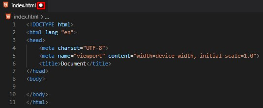

Estructura de un proyecto web
Para dar nuestros primeros pasos vamos a necesitar descargar un editor de texto plano.
Para poder trabajar nuestro documento html.
Existen actualmente varios programas que nos permiten editar texto en html.
En los cuales te voy a sugerir:
Visual Studio Code
Para desarrollar nuestras páginas web, lo podéis descargar desde aquí: Visual Studio Code
Visual Studio Code es un editor de código fuente ligera pero eficaz que se ejecuta en el escritorio y está disponible para Windows, macOS y Linux. Incluye compatibilidad integrada con JavaScript, TypeScript y Node.js, y cuenta con un amplio ecosistema de extensiones para otros lenguajes (como C++, C#, Java, Python, Go, .NET).
HTML-CSS-JavaScript
Estructura básica de un documento HTML
- Los documentos HTML, deben acabar con la extensión html.
- Para indicar el documento inicial en HTML existe una buena praxis no escrita que consisten en llamar index.html a dicho documento para identificarlo lo antes posible.
- Si creamos un proyecto, el documento index.html y escribimos en él, html, desde Visual Studio Code podremos ver que existe una opción que es html:5.
- Esa es una ventaja que tenemos en V.S.C., hay muchas abreviaciones.
Si pulsamos sobre ella, nos escribirá la estructura básica de un documento HTML5:
Hay que matizar que solamente se escribe en mayúscula la DOCTYPE aunque HTML no distingue entre mayúsculas y minúsculas es buena praxis seguir lo que hace el resto de la comunidad.
Una forma sencilla de crear nuestra carpeta de proyecto y el archivo index.html es, desde el escritorio de la pc, creamos una nueva carpeta, abrir la misma y dentro creamos un documento de texto, al cual le cambiaremos el nombre por index.html. Desde VSC nos dirigimos a archivo, y luego abrir carpeta, buscamos el destino y ya tenemos nuestra carpeta de trabajo con el archivo html, o tambien agarramos la carpeta y ponemos en VSC en el área de trabajo sin nada abierto en el mismo.
Anatomía de un documento HTML5
Si nos fijamos en el documento principalmente tenemos 4 TAGs:
- DOCTYPE (versión HTML5): nos permite indicarle al navegador que el documento HTML que hemos creado será de la versión HTML5.
- HTML (documento HTML): delimita el inicio y el fin del documento HTML
- HEAD (Encabezado) → es la cabeza del documento contiene metadatos (información importante) que “no serán visibles” cuando carguemos el documento HTML en el navegador. Dentro del TAG de HEAD, añadiremos información como el título de la página (tag <title>), enlaces a CSS (en el hipotético caso de que queramos añadir una capa de estilos CSS a nuestro documento HTML), enlaces para personalizar los iconos (tag favicon), además de otros metadatos (datos sobre el HTML, como quién lo escribió y palabras claves importantes que describen el documento).
- BODY (Cuerpo) → es la parte del documento que será visible cuando carguemos el documento HTML en el navegador. Por tanto, las etiquetas que no sean metadatos irán aquí.
Podemos ver que tenemos un punto junto al nombre del archivo esto es porque no hemos guardado el documento por el momento. Si lo guardamos, podremos ver que este punto desaparecerá y finalmente podemos abrir nuestro proyecto:
Y veremos que se nos abre una ventana con el documento index.html, aunque, podemos observar que está en blanco ya que por el momento es la estructura sin contenido, por eso nos aparece “vacío”.
Si hacemos clic en el botón derecho del mouse y en inspeccionar (desde Chrome) abriremos el inspector de elementos (DevTools), en el que podremos ver su estructura. En este caso, también podemos apreciar que el propio Live Server al abrir el documento nos ha añadido un pequeño script.
Como crear un documento HTML con sencillos pasos .
Vamos a Visual Studio Code y vamos a añadirle algo de contenido a la web:
- Dentro del <head > vamos a modificar el valor del metadato:
Título (title) de la web por “proyecto mundo” - Dentro del body vamos a añadir dos instrucciones:
La etiqueta de encabezado principal (h1) con <h1> Hola mundo </h1> como contenido
La etiqueta de párrafo (p) con <p> Desde mi primera página web </p> como contenido.
- Visual Studio Code
- <!DOCTYPE html>
- <html lang="es">
- <head>
- <meta http-equiv="X-UA-Compatible" content="IE=edge">
- <meta name="viewport" content="width=device-width, initial-scale=1.0">
- <title> Proyecto mundo <title>
- </head>
- <body>
- <h1> Hola mundo </h1>
- <p> Desde mi primera página web </p>
- </body>
- Copia este código y pega en Visual Studio Code
Página, Google Chrome
Hola mundo
- Desde mi primera página web
- Google Chrome
El resultado será:
Si volvemos a entrar en la ventana de inspeccionar del navegador, también lo podemos hacer (con F12 desde el Google Chrome), podemos ver que su estructura ha cambiado:
HTML-CSS-JavaScript
¿Qué son los atributos de un TAG (etiqueta)?
Anteriormente hemos visto las etiquetas, pero hemos saltado la parte de los atributos. Ya que considero que es más sencillo de aprender, que son los atributos.
Si revisamos la etiqueta html de la estructura básica del documento podemos ver que no solo está formada por el nombre del elemento (html) sino que además tiene un atributo lang que tiene como valor “en”.
Esto es debido a que en algunas ocasiones la etiqueta por sí sola es capaz de almacenar la suficiente información y necesita atributos que la complementen.
Estos atributos son pares de nombre y valor que van separados por un “=” y escritos justo detrás del nombre de la etiqueta de apertura un elemento. El valor debe de ir entre comillas dobles o simples.
En este caso en particular, lang nos permite seleccionar el language (el idioma) de nuestra página al ser en español = es. Si la web fuera en inglés utilizaremos el valor “en” de english para definir el idioma del documento mediante el atributo lang. Por lo tanto, lo que debemos modificar es el valor del atributo lang. Para que los buscadores entiendan mejor que nuestra web es en español.
Espero que este artículo te haya ayudado. Gracias. ¡ Feliz Programación !.